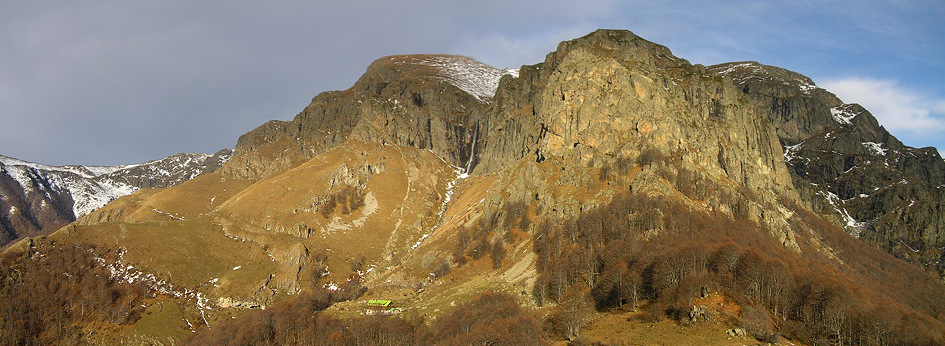
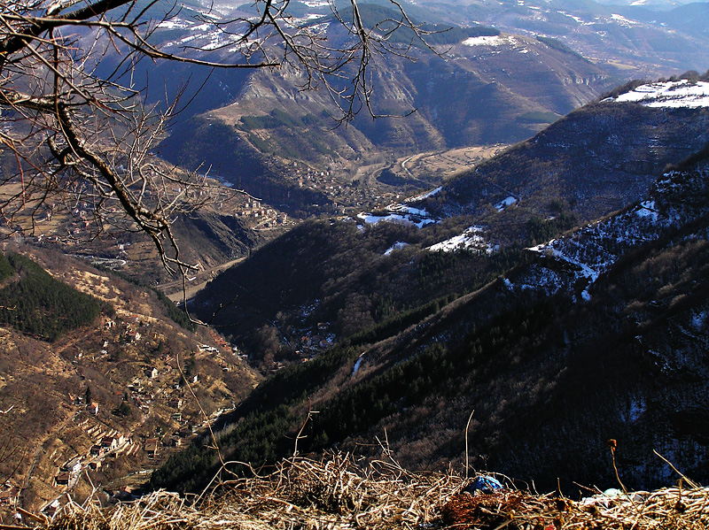
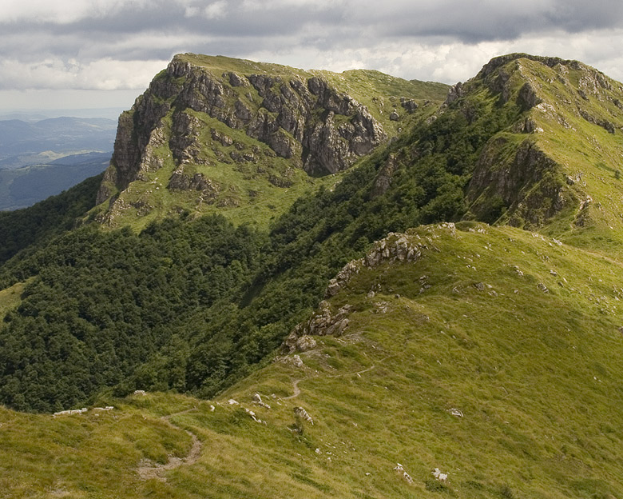

Балканські гори
Балка́нські гори́ (д.-грец. Αἶμος, трансліт. Aĩmos, лат. Haemus), або Стара Планина (болг. Стара Планина) — гори на Балканському півострові, головним чином у Болгарії, яку перетинають із заходу на схід. Західні відроги у Північній Македонії і Сербії. Балканські гори є продовженням Карпат, відокремлені Дунаєм.
Довжина становить 555 км, висота гір сягає 2376 м (вершина Ботев). Складені переважно кристалічними сланцями й гранітами палеозою і докембрія, а також мезозойськими вапняками, пісковиками, конгломератами. Поширений карст. Через Стару-Планину протікає річка Іскир. Вкриті лісами (бук, дуб), гірськими луками. На північних схилах Балканських гір розташований природний парк Болгарка. Він займає територію центрального і східного розділу гір. Поширені мінеральні джерела.

Основні перевали
Петроханський перевал,
Чурекський перевал,
Шипкинський перевал,
Республіки перевал,
Іскирський перевал,
Перевал Витиня,
Перевал Беклемето,
Вратницький перевал,
Котельський перевал,
Вирбицький перевал,
Ришський перевал,
Ущелина Люда Камчия
Айтоський перевал
Дюлинський перевал
Обзорський перевал
Траянський перевал
Піки

Ботев — 2376 м
Вежен — 2198 м
Міджор — 2169 м
Ком — 2016 м
Тодорині Куклі — 1785 м
Мургаш — 1687 м
Шипка — 1523 м
Бузлуджа — 1441 м
Балгарка — 1181 м
Лєвскі
Ветрен — 1330 м
Печери
Рабішська печера
Сиєва-Дупка
Лєдєніка
Корисні копалини
Родовища мідних, свинцево-цинкових та залізних руд, кам'яного і бурого вугілля.
Клімат
Важливий кліматорозділ між Північною і Південною Болгарією; у гребневій частині випадає 800—1100 мм опадів на рік, і гори протягом декількох місяців укриті снігом.
Рослинний світ
Північні, вологіші схили до висоти 1700—1800 м вкриті лісами з дуба, буку, граба, а також хвойних порід. Вершини зайняті лугами (полонинами). У східній частині гір — густі листяні ліси з вічнозеленим підліском і ліанами.
Історія
Біля піка Ботев є Шипкинський перевал, місце дії Шипкинської битви в ході Російсько-турецької війни 1877—1878 років, яка закінчила панування Туреччини на Балканах.
авторство картинок
Автор: krassiu @ Flickr. - https://www.flickr.com/photos/krassiu/94864458/, CC BY 2.0, Посилання
Автор: krassiu - https://www.flickr.com/photos/krassiu/112835895/, CC BY 2.0, Посилання